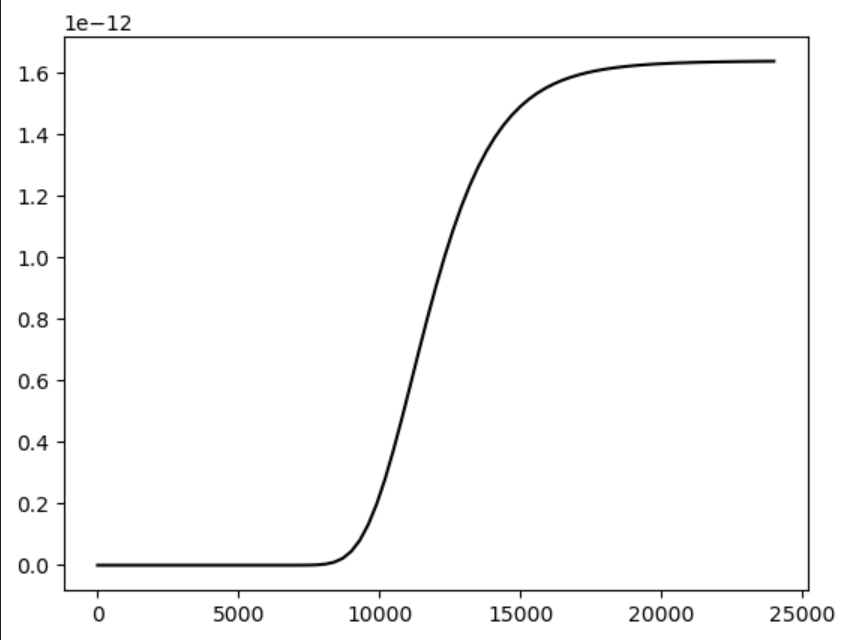
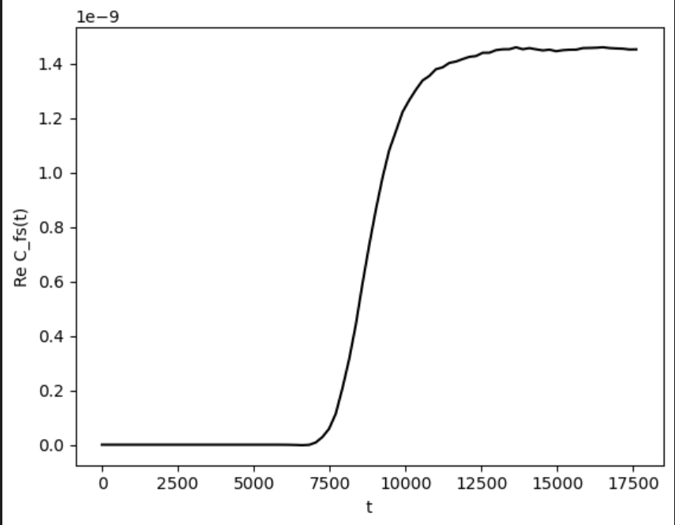
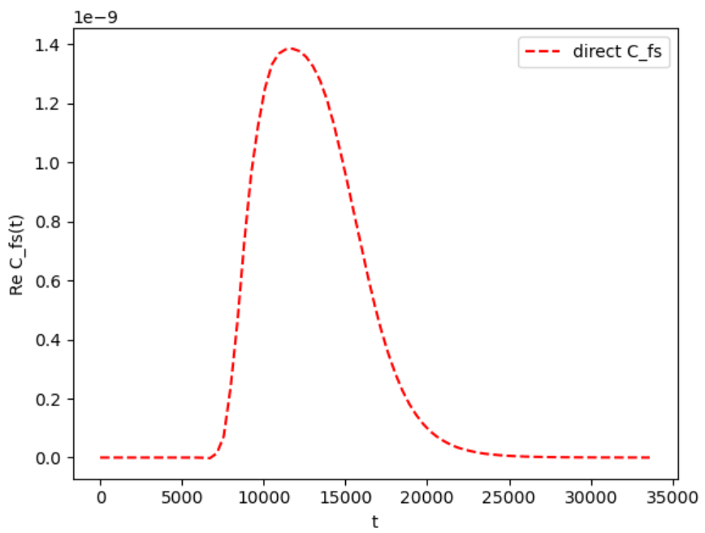

DVR Series - Part VI
Flux-Side Kubo Correlation
The flux-side correlation function is a rate-like observable. It asks how much probability crosses a dividing surface and later remains on the product side. In DVR, that idea becomes a side projector, a commutator-defined flux operator, and a thermal Kubo weight.
Classical picture
The classical flux-side form is
For free motion \(x(t)=x_0+vt\), the delta function selects trajectories starting at the dividing surface and the side function checks whether they are on the product side at time \(t\).
Quantum side and flux operators
The side operator is
The flux operator follows from the Heisenberg time derivative of \(h(t)\):
In an energy basis, this also implies \(F_{nm}=\frac{i}{\hbar}(E_n-E_m)h_{nm}\) when the same Hamiltonian defines the basis.
Kubo flux-side formula
The Kubo-transformed flux-side expression used in the source notes is
Inserting energy eigenstates gives the same thermal kernel as the position Kubo note:
Why compute flux-flux first?
The direct \(C_{fs}\) calculation can decay when a complex absorbing potential removes amplitude after the packet reaches the absorbing region. A more stable route is to compute the flux-flux correlation and then integrate:
The source note uses the real Hamiltonian for the thermal Kubo weighting and the absorbing Hamiltonian only for real-time propagation. This keeps the Boltzmann kernel physical while damping boundary reflections during the real-time part.
CAP and Schur propagation
With a complex absorbing potential, the propagation Hamiltonian is non-Hermitian:
The source workflow uses a complex Schur decomposition,
so real-time factors can be evaluated with the triangular matrix \(T\). This is numerically safer than relying directly on ill-conditioned eigenvectors of a non-normal matrix.
Numerical results



Operator implementation
def side_projector(x, dividing_surface=0.0):
return np.diag((x > dividing_surface).astype(float))
def flux_operator(hamiltonian, side, hbar=1.0):
return 1j / hbar * (hamiltonian @ side - side @ hamiltonian)These definitions are in assets/code/dvr/dvr_kubo_minimal.py. The same file also contains the shared Kubo kernel used in the previous note.